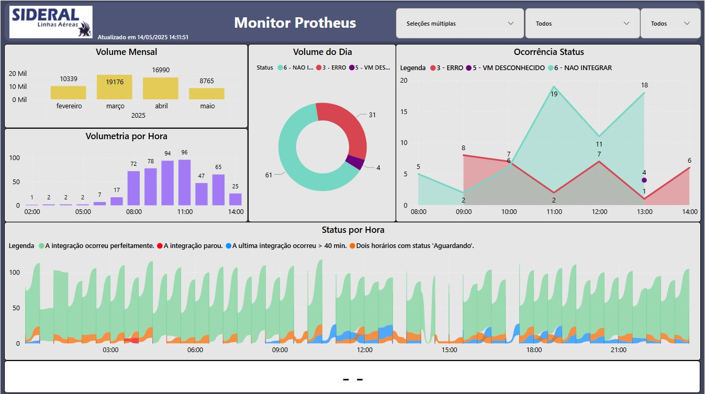
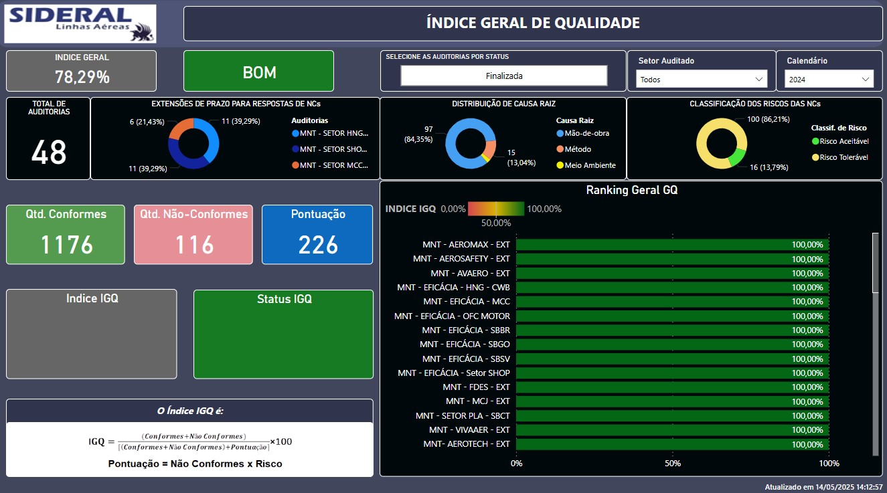
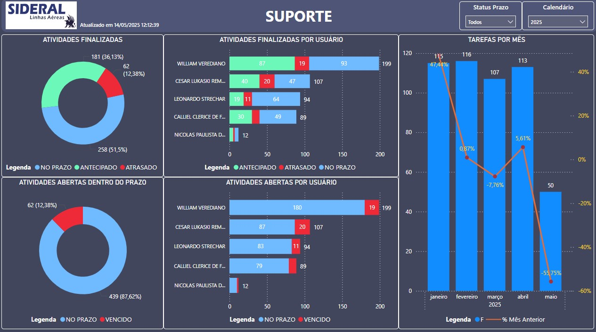

Aviso: As imagens apresentadas neste portfólio são de direitos reservados da empresa Sideral Linhas Aéreas e estão sendo utilizadas exclusivamente para fins didáticos.
Projetos
Abaixo estão alguns Dashboards desenvolvidos:

Dashboard criado no Power BI para análise de paradas de integrações no sistema Protheus.

Relatório interativo com dados de Auditorias Realizadas.

Análise de Suportes realizados.